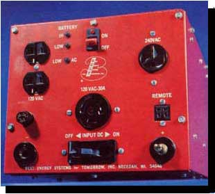
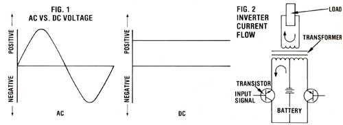
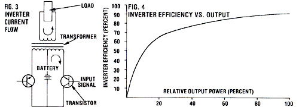
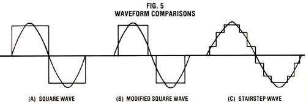
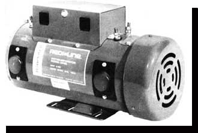

Generating your own power doesn't mean you
have to give up the convenience of AC living.
The progress made in developing alternative sources of energy over the last decade has demonstrated that independent power systems (those using other than fossil fuels) are not only possible but are also very practical. In fact, a wide variety of generating equipment is now available to allow individuals to take advantage of just about any renewable source of energy.
For a number of reasons, however, most of these systems produce only direct current (DC), and often do so only at low voltages. Nonetheless, it's generally agreed that the greatest potential use for alternative energy in the future will be to serve alternating current (AC) loads ... since those exist in the vast majority of modern homes. Conventional refrigerators, most televisions, and all induction motors (which comprise 97% of the U.S. supply of electric motors) simply won't work on direct current. Furthermore, although there are DC-compatible substitutes for some such appliances, they're typically quite expensive.
Of course, one way out of this dilemma would be to convert direct current to alternating current ... and one of the most effective ways to accomplish this is through the use of an electronic inverter. In this ar ticle, I'm going to tell you about the different sorts of inverters that are available, and their applications. Then, in MOTHER NO. 81, we'll get down to the details of putting one of these devices to work.
To understand how inversion is accomplished, you should first comprehend how AC power differs from DC. Compare the voltage components of both types of power, as illustrated in Fig. 1, and you'll see that in alternating current the voltage is constantly reversed. The polarity (positive or negative) switches rhythmically in the form of a sine wave. On the other hand, the polarity of direct current is constant ... that is, the positive lead is forever positive (even though the voltage may vary).
The basic idea of an inverter, therefore, is to periodically change the polarity of the DC source. Of course, there is more than one way to approach the problem, but semiconductors (such as transistors)-which accomplish the metamorphosis by switching currents through a transformer-are the most common solution.
Fig. 2 is a simplified diagram of a typical inverter circuit. The workhorses are transis tors ... solid-state switches that can be changed from "off" to "on" simply by applying a small voltage to their control elements. To take advantage of this property, the emitter leads from a pair of transistors are connected to opposite ends of a center-tapped transformer. The collector lead from each transistor is then wired to the positive leg of a DC power source-a storage battery, for example-and the center tap from the transformer is returned to the negative lead of the power source.
If you're a little hazy about this, read on ... I think the picture will become clear once the sequence of events is described. First, a signal is applied to the left transistor that "tells" it to allow current to pass. The flow of electrons proceeds from the battery, through the transformer, into the transistor, and back around to the battery ... counter-clockwise as indicated by the arrow. The transformer primary winding delivers the energy to the output winding, and current moves in a clockwise direction through the load as shown.
After about eight-thousandths of a second, the first transistor is turned off and the other (on the right) is switched on. As shown in Fig. 3, the current again flows from the battery, through the transformer, into a transistor (but this time it's the one on the right), and back to the battery. However, the current is now traveling in the opposite direction (clockwise) in the transformer windings. This means that the electron movement in the load portion of the circuit is counterclockwise.
As you can see, then, this switching mimics an AC current pattern, and when it performs a backward and forward flow 60 times per second, you get the rough equivalent of 60-hertz electricity. (What's more, the transformer can be designed to raise voltage to the desired level.)
Although transistors are employed in many small inverters, they're not really very efficient when used as switching devices. Consequently, for inverters larger than one kilowatt (KW), a component called a silicon-controlled rectifier (SCR) is substituted in the same basic circuit. Units using SCR's are available with power capabilities of 10 KW or more.
Unfortunately, even an SCR absorbs a portion of the power that it's controlling, and losses in the transformer core and from wire resistance add to the toll. All in all, you can expect an inverter to supply about 9007b of the input power to the load ... but only under ideal conditions.
An inverter usually performs best when it's fully loaded, or close to it (see Fig. 4). For example, if you have a 500-watt unit, it will work most efficiently when you're drawing 400 to 500 watts through it. As the load drops, so does the mechanism's efficiency . . . since an inverter requires a certain amount of what's referred to as "tare" energy to keep it running. At low demand, operating power can become a large part of the overall output. In fact, this standby (or idle) current will be between 5 and 20% of the maximum power the device is capable of supplying, depending on the particular inverter.
The obvious solution to tare loss (which can drain your batteries of valuable energy) is to shut down the inverter when no power is being demanded. Several models on the market incorporate circuits that sense power demand and switch the inverter off when there's no load.
You may have noticed that I used the word "mimics" when describing an invert er's attempt at producing AC power. While it is true that the simplified circuit shown in Fig. 2 would produce alternating current, the form of the wave generated by the two transistors would be far from sinusoidal ... which is the pattern of pure AC utility power, as illustrated in Fig. 1. In fact, the waveform from our simple inverter would be more properly called square, because of its characteristic shape (which is shown-interposed with a sine wave, for comparison-in Fig. 5A).
Now some AC equipment can handle squarewave AC power just fine, but other devices have real problems with it. Induction motors, for example, are designed to work on the purest type of AC current-the sine wave-and when the transistors in an inverter deliver a square wave (which represents at a minimum, a distortion of 40% from the sine wave) to one of these devices, the motor must work harder to overcome the counterproductive currents. The result is a marked increase in operating temperature and a loss of efficiency.
The ultimate solution, of course, would be to generate a sine wave. Unfortunately, this is easier said than done, since inverters capable of producing such a form are inherently bulky, expensive, and inefficient. A simpler remedy is to modify a square wave to remove as much of the distortion as possible. For example, if we delay the activation of the second transistor, we'll get a waveform that looks much like the one shown in Fig. 5B. As you can see, this modified square wave is an improvement. The distortion has been reduced from 40% to less than 20%.
Some inverters extend this concept even further by stepping in multiple currents to generate the "staircase" effect you see in Fig. 5C. The intricate switching pattern, however, requires a controller that borders on being a microcomputer, which increases the complexity and cost of the devices. In fact, as a general rule, you can assume that the closer an inverter's waveform is to sinusoidal, the more you should expect to pay for the device.
Inverter design and selection is further complicated by the fact that not all AC loads react equally to alternating voltage. A utility company can compensate for this inherent problem within its sizable grid ...
but in a small, independent electrical system, the behavior of the load(s) is reflected back into the inverter.
An induction motor, for instance, requires substantially more power to get going than it does to operate at its design speed. (It actually takes six times as much juice to start up one of these motors as it does to run it!) As a matter of fact, every electrical device in your household has some surge demand, though none is as demanding as the induction motor.
A surge current can last for anywhere from a fraction of a second to almost a full minute ... and, during this time, the inverter is placed under heavy stress. Fortunately, inverters can be engineered to withstand very short periods of extreme overload ... but this sort of abuse is best handled by SCR-equipped devices.
Of course, you could just buy an inverter large enough to handle the calculated surge loads of the devices you want to run. The disadvantages to this approach, however, are twofold. First, and most obvious, a bigger inverter costs more. Second, if you'll recall our discussion of standby (or tare) power, you'll realize that the upsized inverter will be forced to operate in its inefficient, low-demand range once the load has passed surge and dropped to its conservative operating level.
Another aspect to consider when dealing with AC electricity is the power factor of the load(s). The power factor results from a time distortion between the voltage and current components of the AC waveform, and is created during an operation with a reactive load (such as the running of an induction motor).
To make it more clear, let's consider inductance (a reactive value created by the windings in a motor). By its very nature, inductance resists changes in the current flowing through it (it would rather the current remained steady). But as we have discovered, both the voltage and current in an AC system are changing constantly.
So, as the voltage (which is unaffected by inductance) increases across the motor winding, the current must work harder to stay in step with it. However, despite such efforts, the current can't keep up and lags behind the voltage, as shown in Fig. 6.
When you consider that the simultaneous combination of voltage and amperage makes up power, you can begin to see what problems this time distortion might present. If the voltage and current are out of phase with each other, then the power-which is calculated by multiplying the instantaneous values of voltage and amperage-will be less than you would get by multiplying the peak voltage by the peak amperage in the ideal situation.
The discrepancy between the true power (the amount of energy the load is actually using) and the apparent power (the power the load seems to be using when the voltage and current are multiplied, disregarding timing) is the power factor. For example, an induction motor with a power factor of 0.7 is really consuming only 70% of the power available to it. To distinguish between the two values, apparent power is expressed in volt-amps (VA), while true power is measured in watts. Consequently, the volt-amp rating of an appliance is always higher than its actual wattage.
Unfortunately, this phase shift also reflects back into the inverter, where it can do real damage. The situation is easily corrected, though, by placing a capacitor across the inductive load. You see, a capacitor has a reactive component which is just opposite that of an inductor: It resists changes in voltage while leaving current unaffected. By paralleling the proper amount of capacitance to the inductive load, the effects of the inductance can be cancelled, and the sine wave will once again be in phase with itself.
Just as the nature of the load affects the inverter, so can the inverter affect some loads. There are three important cases in which this can come into play ... and we'll discuss those situations briefly here.
PEAK VOLTAGE: The amount of power delivered by an AC waveform is equal to the area under the curve ... even if that curve happens to be square. Now if you refer back to Fig. 5B, you'll see that the sine wave must reach a higher voltage if it's to develop the same amount of power as the square wave.
Of course, the load (the power demand, that is) doesn't really mind the voltage difference between sine and square waves. It's interested only in receiving all the power it has coming. However, some electronic devices are designed to take advantage of the recurring peaks of a sine wave. For instance, many color televisions utilize this voltage to generate higher voltages inside the set ... thereby eliminating bulky power supplies. Obviously, the square wave can't deliver the voltage that such electronics require, and the set won't work properly.
VOLTAGE REGULATION: In most inverter applications, it's of primary importance to stablilize the output voltage. Without an internal regulator, a square-wave inverter will give a correspondingly lower voltage output as the voltage of the input drops (which is a regular occurrence in battery storage systems). And since most appliances are designed to operate within a specific voltage range, an extreme drop could result in damage.
When you shop for an inverter, then, you should be certain that it has voltage regulation and that its range of tolerance of input is in keeping with the generator or batteries that will be supplying it with power.
FREQUENCY. Devices that are sensitive to voltage peaks and regulation are also likely to be sensitive to frequency (clocks and timers are two examples). Ideally, the output frequency of the inverter should always be 60 cycles per second (in the U.S.). But in actual application, variations in input voltage, temperature, output power, etc. will influence the frequency. And, al though large inverters do an admirable job of limiting frequency drift, many small, inexpensive transistorized units have no means of stabilizing the output at all.
Yet another member of the electronic inverter family is the synchronous inverter. Unlike the static units we've discussed so far-which take power from a source, invert it, and deliver it to a load-the synchronous type is designed to be hooked up to a local utility.
As I'm sure you're aware, most alternative energy sources, particularly the wind and the sun, are by nature intermittent. To get through the calm or dark times, therefore, people often use storage batteries. Unfortunately, batteries are expensive and messy, and they require maintenance.
The synchronous inverter eliminates the problems of chemical storage by allowing owners of alternative energy systems to use utilities for backup power. Though different utilities have different ways of making the necessary connection, the essential elements of the arrangement are that you can buy power from the grid when you run short, and sell it to the utility when you've got an excess. An interesting note is that the utility is required-by law-both to make this connection and to pay you a fair (but, of course, wholesale) price for the power you deliver to it.
SELF-COMMUTATION: This sort of synchronous inverter is quite similar to the static inverter we talked about earlier ... with one important exception: Utility power controls the unit's output waveform and frequency.
Therefore, since the utility's waveform is purely sinusoidal, neither square- nor modifiedwaveform inverters can be used for interfacing. They can be adapted, however, with the proper filtering to remove unwanted harmonic distortion. The basis for the synchronous inverter is usually a stairstep waveform unit, though, since output from such a device requires far less filtering and is thus more efficient. The frequency of a self-commutated inverter is locked onto the line frequency by phasing the operation of the electronic switches with the AC input.
LINE COMMUTATION: Another way to handle current switching in a synchro nous inverter is to rely entirely on the sine wave from the utility for commutation. With this approach, the inverter won't function if the power lines go dead. Consequently, an independent power system connected to the utility by a linecommutated inverter won't be of use in the event of a public power failure.
POWER FACTOR: One major shortcoming of many synchronous inverters is their low power factors. Because of present design practices and intrinsic characteristics, it's not uncommon to find units with ratings of 0. 5 or less!
Now power factor correction for synchronous inverters can be accomplished with capacitors, as it is for the static inverters we discussed earlier. However, an inverter's power factor-and specific demand for capacitance-is influenced by changing loads, grid inductance, phase angle, etc., and as a result, it changes constantly. To date, inverter manufacturers have relied on the sheer size of the utility network to absorb these defects. But as more and more independent producers are placed on line, additional efforts will likely be necessary.
I'd like to stress, at this point, that the power factor of an inverter itself doesn't affect its efficiency ... it merely changes the unit's rating. For example, a 4-KW inverter with a power factor of 0.5 is rated at 8 KVA. This doesn't mean that only half the power is being delivered to the load, though, since if the power factor were corrected to unity (using capacitance), the unit's capability would still be 4 KW.
WIRE NUTS AND BOLTS. Unfortunately, tying into a utility isn't as easy as it may first appear. Whether you use a self- or line-commutated inverter, there are important safety considerations to be taken into account. The self-commutated inverter, for instance, would keep right on humming if the utility lines went dead. This could have several serious consequences. First, if the disruption were caused by a component failure-such as a transformer-the inverter would feed power into the defect, which could wreak havoc. At the same time, a service worker could conceivably receive a lethal shock while trying to repair equipment that was supposedly "dead".
In theory, at least, a line-commutated inverter should stop working if the utility power is removed. This should protect the grid from independent producers ... unless more than one such plant is on the line. You see, it's not impossible for two, or more, inverters to synchronize between themselves and continue producing power.
A synchronous inverter, therefore, must include a sensor to disconnect it from the grid when even one cycle (1/60 of a second) is missed. Actually, though, it's not unusual for a utility to skip a beat now and then, because of the many switching stations such firms employ to manage power flow. So the inverter's "fail safe" detector must be smart enough to judge the difference between a slight case of the jitters and an honest-to-goodness failure.
Living in an AC world may not be the best (or the worst) of all possibilities, but it is one that we all have to deal with. Through the proper use of an inverter, DC and AC power can be made compatible-and cost-effective-though ... and, for many of us, it may be the only practical method of having our electricity and using it too.
EDITOR'S NOTE: In the next issue of MOTHER, we'll tell you how to go about selecting, sizing, and using inverters. Don't miss it!
Before the advent of solid-state inverters, DC power was converted to A C by a couple of different techniques. One, the vibrating inverter, is now largely gone ... and for the most part, its passing is no great loss. Most of the vibrators were pretty unreliable, and produced alternating current of limited quality and quantity.
The DC to AC converter - often called a motor/generator - is still with us, how-ever and has some useful applications. Since this device consists of a DC motor that drives an AC alternator, its waveform is pure sine. Therefore, the converter can be used for driving appliances that require a sine waveform ... and it's particularly attractive when you consider that it's substantially less expensive than an equivalent electronic counterpart.
On the other side of the coin, motor/generators are considerably less efficient than are electronic inverters (they usually operate at no more than 80% efficiency), consume a large amount of idle current, and require periodic maintenance. Currently, there's only one manufacturer of motor/ generators. You can contact it by writing Honeywell Motor Products Division, Dept. THEN, P.O. Box 106, Rockford, Illinois 61105.
|
 |
 |
 |
|
 |
 |
|